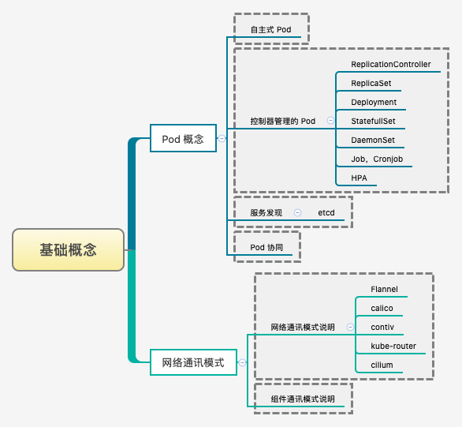
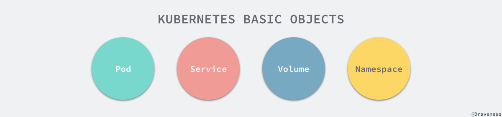
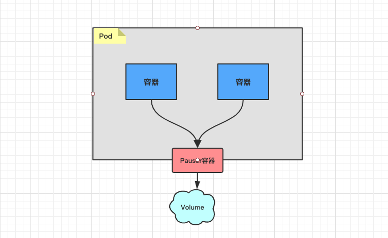
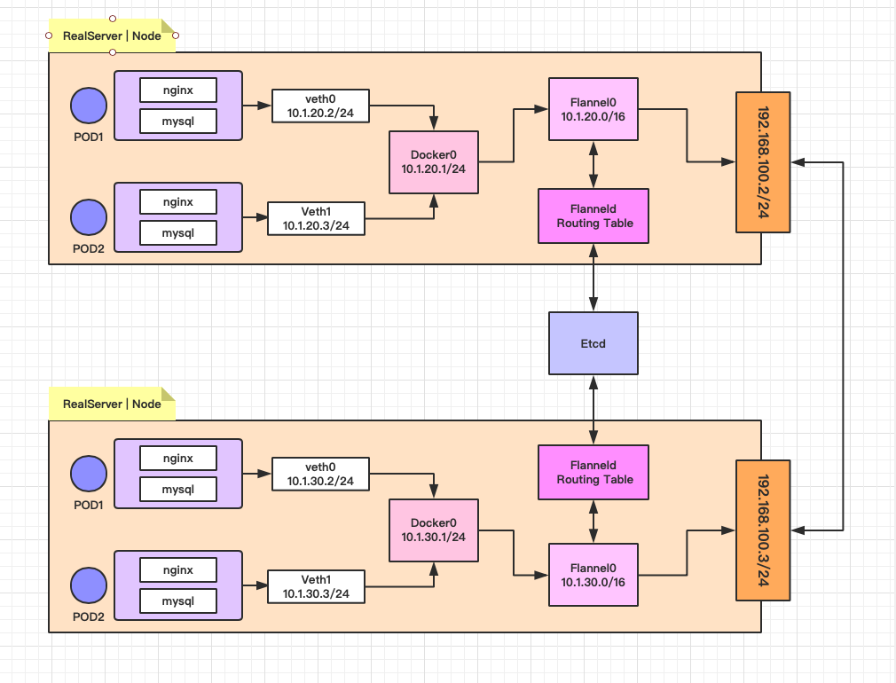
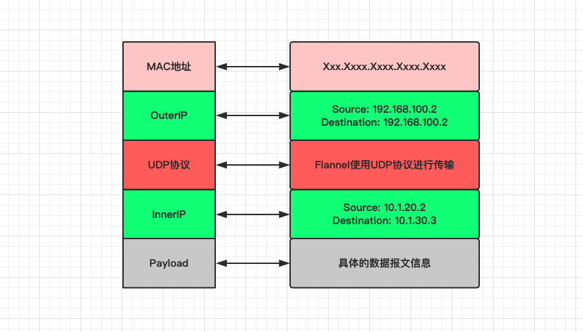
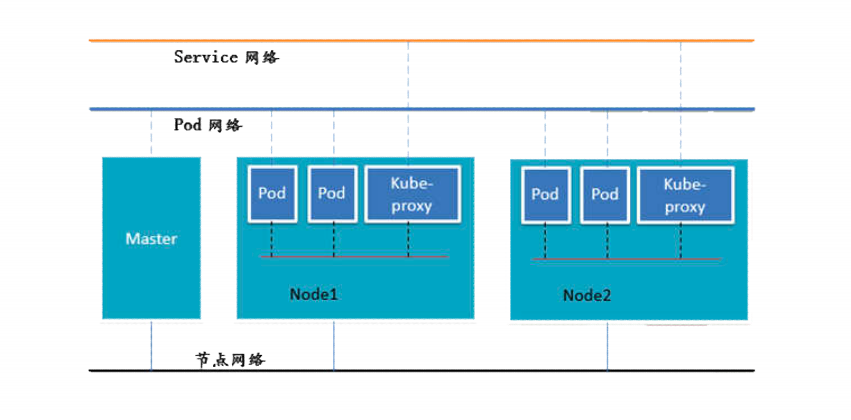

Pod 就是最小并且最简单的 Kubernetes 对象

Pod、Service、Volume 和 Namespace 是 Kubernetes 集群中四大基本对象，它们能够表示系统中部署的应用、工作负载、网络和磁盘资源，共同定义了集群的状态。Kubernetes 中很多其他的资源其实只对这些基本的对象进行了组合。
Pod-> 集群中的基本单元Service-> 解决如何访问 Pod 里面服务的问题Volume-> 集群中的存储卷Namespace-> 命名空间为集群提供虚拟的隔离作用

Kubernetes 有许许多多的技术概念，同时对应很多 API 对象，其中最重要的也是最基础的是 Pod 对象。Pod 是在 Kubernetes 集群中运行部署应用或服务的最小单元，它是可以支持多容器的。Pod 的设计理念是支持多个容器在一个 Pod 中共享网络地址和文件系统，可以通过进程间通信和文件共享这种简单高效的方式组合完成服务。
apiVersion: v1
kind: Pod
metadata:
name: busybox
labels:
app: busybox
spec:
containers:
restartPolicy: Always
- name: busybox
image: busybox
command:
- sleep
- "3600"
imagePullPolicy: IfNotPresent1. Pod 的内部结构
Pod 代表着集群中运行的进程：共享网络、共享存储
在同一个 Pod 中，有几个概念特别值得关注，首先就是容器，在 Pod 中其实可以同时运行一个或者多个容器，这些容器能够共享网络、存储以及 CPU/内存等资源。
首先，我们需要知道的是，每个 Pod 都有一个特殊的被称为 “根容器” 的 Pause 容器。Pause 容器对应的镜像属于 Kubernetes 平台的一部分，通过 Pause 容器使工作在对应 Pod 的容器之间可以共享网络、共享存储。

[1] Pod 共享资源
为什么 Kubernetes 会设计出一个全新的 Pod 概念，并且有这样特殊的结构？主要是因为，使用 Pause 容器作为 Pod 根容器，以它的状态代表整个容器组的状态；其次，Pod 里的多个业务容器共享 Pause 容器的 IP 地址，共享 Pause 容器挂接的 Volume 资源。
- 共享存储资源
可以为一个 Pod 指定多个共享的 Volume 资源。Pod 中的所有容器都可以访问共享的 volume 资源。Volume 也可以用来持久化 Pod 中的存储资源，以防容器重启后文件丢失。
- 共享网络资源
每个 Pod 都会被分配一个唯一的 IP 地址。Pod 中的所有容器共享网络空间，包括 IP 地址和端口。Pod 内部的容器可以使用 localhost 互相通信。Pod 中的容器与外界通信时，必须分配共享网络资源，例如使用宿主机的端口映射。

[2] veth 设备的特点
一个设备收到协议栈的数据发送请求后，会将数据发送到另一个设备上去
veth和其它的网络设备都一样，一端连接的是内核协议栈veth设备是成对出现的，另一端两个设备彼此相连
# 物理网卡eth0配置的IP为192.168.1.11
# 而veth0和veth1的IP分别是192.168.2.11和192.168.2.10
+----------------------------------------------------------------+
| |
| +------------------------------------------------+ |
| | Newwork Protocol Stack | |
| +------------------------------------------------+ |
| ↑ ↑ ↑ |
|..............|...............|...............|.................|
| ↓ ↓ ↓ |
| +----------+ +-----------+ +-----------+ |
| | eth0 | | veth0 | | veth1 | |
| +----------+ +-----------+ +-----------+ |
|192.168.1.11 ↑ ↑ ↑ |
| | +---------------+ |
| | 192.168.2.11 192.168.2.10 |
+--------------|-------------------------------------------------+
↓
Physical Network2. Pod 的网络通信
集群网络解决方案: Kubernetes + Flannel
Kubernetes 的网络模型假定了所有 Pod 都在一个直接连通的扁平的网络空间中，这在 GCE(Google Compute Engine)里面是现成的网络模型，Kubernetes 假定这个网络已经存在了。而在私有云搭建 Kubernetes 集群，就不能假定这个网络已经存在了。我们需要自己实现这个网络假设，将不同节点上的 Docker 容器之间的互相访问先打通，然后才能正常运行 Kubernetes 集群。
- 同一个
Pod内多个容器之前通过回环网络(lo-127.0.0.1)进行通信 - 各
Pod之间的通讯，则是通过Overlay Network网络进行通信 - 而
Pod与Service之间的通讯，则是各节点的iptables或lvs规则
Flannel 是 CoreOS 团队针对 Kubernetes 设计的一个网络规划服务，简单来说，它的功能就是让集群中的不同节点主机创建的 Docker 容器都具有全集群唯一的虚拟 IP 地址。而且它还能在这些 IP 地址之间建立一个覆盖的网络(Overlay Network)，通过这个覆盖网络，将数据包原封不动地传递给目标容器内。


[1] 不同情况下的网络通信方式
- 同一个 Pod 内部通讯：
- 同一个 Pod 共享同一个网络命名空间，共享同一个 Linux 协议栈。
- 不同 Pod 之间通讯：
- Pod1 和 Pod2 在同一台 Node 主机，由 docker0 网桥直接转发请求到 Pod2 上面，不经过 Flannel 的转发。
- Pod1 和 Pod2 不在同一台 Node 主机，Pod 的地址是与 docker0 在同一个网段的，但 docker0 网络与宿主机网卡是两个完全不同的 IP 网段，并且不同的 Node 之间的通讯只能通过宿主机的物理网卡进行。将 Pod 的 IP 地址和所在 Node 的 IP 地址关联起来，通过这个关联让 Pod 可以互相访问。
- Pod 至 Service 的网络
- 目前基于性能考虑，全部为 iptables 或 lvs 维护和转发。
- Pod 到外网
- Pod 想外网发送请求，查找路由表，转发数据包到宿主机的网卡，宿主机网卡完成路由选择之后，iptables 或 lvs 执行 Masquerade，把源 IP 地址更改为宿主机的网卡的 IP 地址，然后向外网服务器发送请求。
- 外网访问 Pod
- 通过 Service 服务来向外部提供 Pod 服务。
[2] ETCD 之于 Flannel 提供说明：
- 存储管理 Flannel 可分配的 IP 地址段资源
- 监控 ETCD 中每一个 Pod 的实际 IP 地址，并在内存中建立维护 Pod 节点的路由表

3. Pod 的多种类型
Pod 存在多种不同的创建类型来满足不一样的用途

- [1] ReplicationController
ReplicationController 用来确保容器应用的副本数量始终保持在用户定义的副本数，即如果有容器异常退出，会自动创建新的 Pod 来代替，而如果异常多出现的容器会自动回收。
- [2] ReplicaSet
在新版本(相对而言的较优方式)的 Kubernetes 中建议使用 ReplicaSet 来取代 ReplicationController 来管理 Pod。虽然 ReplicaSet 和 ReplicationController 并没有本质上的不同，只是名字不一样而已，唯一的区别就是 ReplicaSet 支持集合式的 selector，可供标签筛选。
虽然 ReplicaSet 可以独立使用，但一般还是建议使用 Deployment 来自动管理 ReplicaSet 创建的 Pod，这样就无需担心跟其他机制的不兼容问题。比如 ReplicaSet 自身并不支持滚动更新(rolling-update)，但是使用 Deployment 来部署就原生支持。
- [3] Deployment
Deployment 为 Pod 和 ReplicaSet 提供了一个声明式定义方法，用来替代以前使用 ReplicationController 来方便且便捷的管理应用。主要的应用场景，包括：滚动升级和回滚应用、扩容和缩容、暂停和继续。
- [4] HPA
HPA 仅仅适用于 Deployment 和 ReplicaSet，在 V1 版本中仅支持根据 Pod 的 CPU 利用率扩缩容，在新版本中，支持根据内存和用户自定义的 metric 动态扩缩容。
- [5] StatefulSet
StatefulSet 是为了解决有状态服务的问题，相对于 Deployment 和 ReplicaSet 而已。其主要的使用场景，包括：稳定的持久化存储、稳定的网络标识、有序部署、有序收缩。
- [6] DaemonSet
DaemonSet 确保全部或者一些 Node 上面运行一个 Pod 副本。当有 Node 加入集群的时候，也会为它们新加一个 Pod。当有 Node 从集群中移除的时候，这些 Pod 也会被回收。删除 DaemonSet 将会删除它所创建的所有 Pod。
使用 DaemonSet 的典型场景就是，在每个节点运行日志收集、运行监控系统、运行集群存储等服务，只要新加进来的节点都需要运行该服务。
- [7] Job
Job 负责批处理任务，仅执行一次的任务，它保证批处理任务的一个或者多个 Pod 成功结束，才会返回成功。
- [8] Cront Job
Cront Job 管理是基于时间的 Job，即在给定时间点只运行一次，且周期行的在给定时间点运行特定任务。